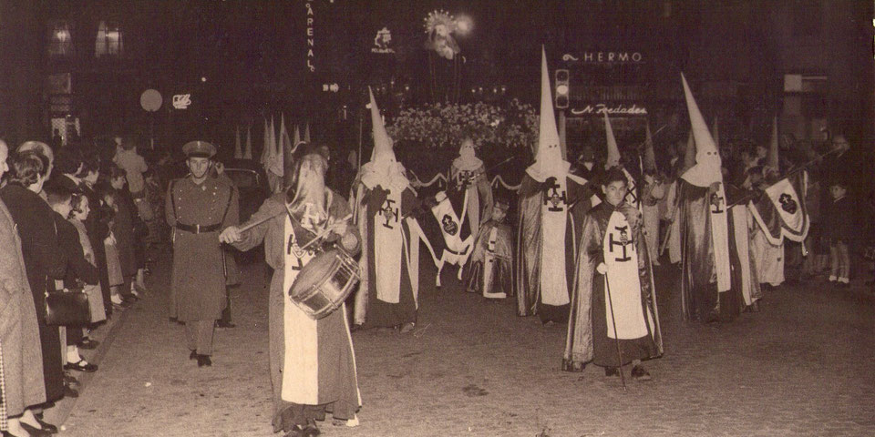
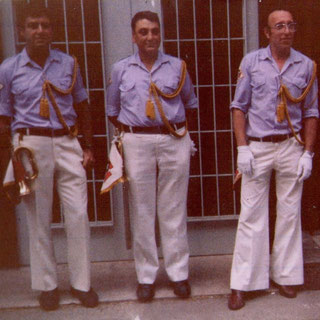
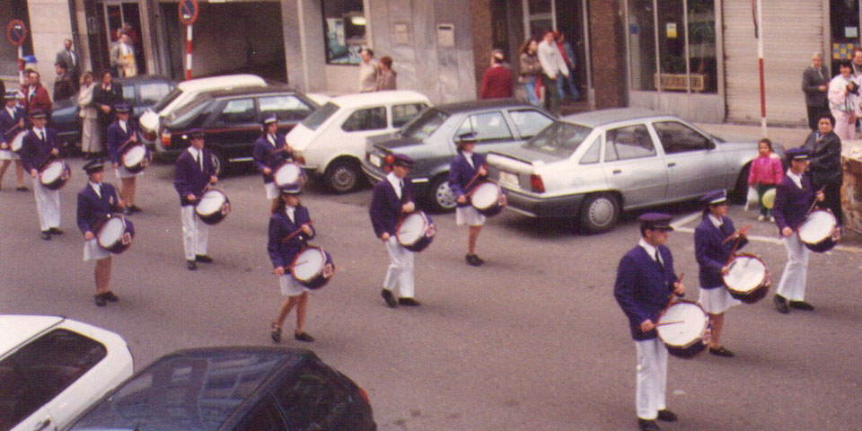

Los orígenes de la Agrupación Musical Virgen de la Amargura se remontan a la veterana Banda de Cornetas y Tambores de la Pasión, de la que es heredera directa. Los inicios de ésta son inciertos y se pierden en el tiempo, aunque se pueden atestiguar ya en los años 40. De hecho, en el año de fundación de la sección de nazarenos de la Archicofradía de la Pasión, 1947, pudo verse procesionando junto a ésta al menos a un tambor como acompañamiento musical. En cualquier caso, parece que no fue hasta mediados de los 50 cuando la Banda empezó a tomar forma como tal.

Al menos un tambor acompañó a la Archicofradía en 1947
Es probable que en 1955 o 1956 ya se hubiera formado el embrión de lo que sería la Banda, aunque no encontramos referencia escrita hasta 1958, concretamente en la crónica de El Diario Montañés sobre la Procesión del Encuentro de ese año, que relata el paso de la Virgen de la Amargura acompañado por una batería de trompetas, cornetas en realidad, y tambores. Ni siquiera se menciona el nombre de la banda en cuestión, y al año siguiente vuelven a desaparecer las referencias a la misma en la prensa.
El impulso definitivo a la nueva Banda de Cornetas y Tambores llegaría de la mano del padre Pedro en 1960, contratando entonces los servicios musicales de Basilio Gomarín Girado para la dirección del conjunto. A partir de entonces la Banda de la Pasión empieza a figurar recurrentemente en la prensa acompañando a su cofradía. Hasta 1966 procesionó con los hábitos penitenciales de la sección de nazarenos, estrenando ese año su primer uniforme de chaqueta morada y gorra de plato.
La situación, cada vez más insostenible, llegó a su punto álgido el día de Martes Santo de 1972, cuando los componentes de la Banda se negaron a procesionar al no disponer de unas condiciones decentes para el ensayo. A raíz de ello se consiguió volver a la parroquia, con el nuevo edificio ya construido, cediéndose el garaje para los ensayos musicales.
El desánimo hizo mella en la Banda hasta 1979. Fue entonces cuando tres de los componentes más veteranos, Telesforo Molpeceres Regidor, José Ramón Sierra de la Fuente y Eduardo López Sotelo, tomaron las riendas, reorganizaron la Banda y le insuflaron nueva vida. Comenzó entonces uno de los periodos más brillantes de su historia, que se alargó durante más de una década e hizo que la Banda protagonizara multitud de eventos en el barrio, en la ciudad e incluso en la región y fuera de ella. Gracias a Foro, siempre recordado, disponemos de una extensa crónica de esta época, recogida en varios cientos de páginas minuciosamente redactadas.

Telesforo Molpeceres Regidor ("Foro")
Junto a Eduardo y José en uno de los mejores momentos de la banda
La Banda fue creciendo y acumulando decenas de actuaciones anuales, incluyendo en sus filas a mujeres por primera vez en el año 1993.

Procesión del Encuentro de 1994, con mujeres ya incorporadas a las filas de la Banda.
Desgraciadamente, la sucesiva marcha de la Banda de sus principales valedores sumió al conjunto en una decadencia creciente que tocó suelo con el cambio de milenio. Sin embargo, la oportuna aparición de Manuel Ángel Gómez Sampedro e Isidro García dio vida de nuevo a la Banda. Juntos capitanearon su refundación, poniéndola bajo la advocación de la Virgen de la Amargura. Los cambios se sucedieron rápidamente, convirtiéndose en la primera Agrupación Musical de Santander pasada la Semana Santa de 2006. El conjunto se enriqueció progresivamente con la inclusión de trompetas, fliscornos, trombones, tuba y bombardinos.
La enorme labor que dejaron tras de sí fue continuada por Miguel Echevarría Bonet y Fernando Vitienes Santana, que a partir de 2018 continúa en solitario. En esta última etapa se ha apostado por aumentar el número de instrumentistas y la riqueza musical con nuevas voces y composiciones más trabajadas.
Desde finales de 2019, la Agrupación Musical fue recibida con los brazos abiertos por la Organización Juvenil Española (OJE), quien permitió a esta formación tener una nueva sede y local de ensayo en la calle Navarra, dentro del santanderino barrio de Porrúa, y ahora, una segunda sede de ensayos en la Avenida de los Castros, donde se continúa trabajando, buscando seguir mejorando y creciendo.

La Agrupación Musical actualmente durante la Procesión del Resucitado en Santander